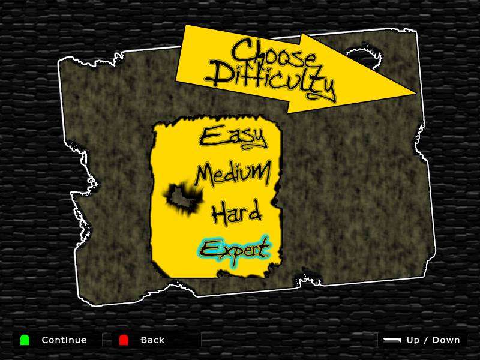

My name is Mr. Craig and I'm going to show you how. Making a game can be difficult, but it doesn't have to be. This will be easy as playing a game and as hard as mastering that game. The only thing you'll need to do is to be honest with yourself and set the difficulty level of making games to match your skill level.
Have you ever played a game that let you choose the game's difficulty? I have and when I would choose the Medium difficulty, if that was too frustrating I would lower it to Easy difficulty. Then after a while Easy wasn't challenging so I increased the difficulty to Medium and when that was no longer a challenge I went to the Hardest difficulty.
The lesson learned:
Eventually I would reach my goal, to beat the game.
The same lesson applies to learning how to make a game or learning in general. You have to start with a plan or a goal of where you want to be, then depending on how fast you absorb that information along the journey will determine how fast you should travel towards your goal. frustration means that you should re-learn things that you went over and boredom means that you should travel faster or glide over certain areas.
I have to be honest first. Whatever strategy you use, you're not going to make Call of Duty or Minecraft as your first or even your second video game. When you're ready to make those large games, there will be people around you that will make it fun to create and be by your side.
Those people who work on the large games, they have made dozens of smaller games and are now working at their dream job. How did they get their dream job? They showed them the dozens of games they made of course! Not only will you be working towards learning how to make good games, but you'll be building you list of games to help you get your dream job! If you -work- play hard, you can even get the job before you're old enough to enroll into college. Tell your parents to buy you a nice car instead of that college education. :)